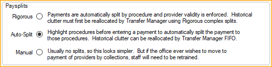

Allocations Setup
Set Allocation settings to determine behavior for payments in Open Dental.
In the Main Menu, click Setup, Account, Allocations.

By default, when entering a Patient Payment, Open Dental automatically suggests Payment Splits (paysplits) allocated to the oldest production items (e.g., adjustments, Pay Plan Charges, procedures) within the family. The paysplits inherit the Clinic and provider associated to the production. However, there are varying levels of paysplit allocation settings, and each are determined by a combination of these settings. The more rigorous settings selected, the greater the information provided on reports and in the patient account.
Quick Allocation Settings
Select from three allocation options to quickly set all the respective allocation setup settings. Individual settings may be changed as needed.

Rigorous Line Item: Requires all payments to be allocated to production. For payments taken before production is completed, it must be designated as Unearned Income to be allocated later. This setting also requires adjustments to be attached directly to completed procedures, with the exception of adjustments created by the Billing/Finance Charges or Late Charges tool. Since these types of adjustments are not attached to a procedure, they cannot be edited, only deleted. This allocation method minimizes the amount of manual editing needed when entering payments and ensure reports and patient accounts are as robust and accurate as possible.
When clicked, the following settings are automatically selected:
- Paysplits is set to Rigorous.
- Adjustments is set to Rigorous.
- Treatment Planned Prepayments are disabled.
- Hide paysplits from Payment window by default is unchecked.
- Show Income Transfer Manager is checked.
- Claim Pay by Total splits automatically is checked.
- +/- Adjustments offset each other is checked.
Select Rigorous Line Item:
- To track production and income by procedure and provider.
- To pay providers based on production and/or income. See Production and Income Reports.
- To easily determine patient portion by procedure on patient accounts.
- If practice wants to use the Patient Portion Uncollected Report to determine outstanding patient portion amounts due by procedure.
- If the practice wants to create custom reports based on procedure income, provider income and patient portion remaining.
- If the practice wants to easily associate accurate procedures and credits to Payment Plan (Pay Plan) Charges.
- If the practice wants to track prepayments, overpayments, or other unearned types.
- If the practice wants to create custom reports based on unearned income types.
Default: Paysplits are allocated to production or unearned income, and adjustments may be attached to procedures but are not required. This is a flexible allocation method that allows paysplits and adjustments to be created or edited without allocating to production or unearned income (i.e., unallocated paysplits and unallocated adjustments).
When clicked, the following settings are automatically selected:
- Paysplits is set to Auto-Split.
- Adjustments is set to Link Only.
- Treatment Planned Prepayments are disabled.
- Hide paysplits from Payment window by default is unchecked.
- Show Income Transfer Manager is checked.
- Claim Pay by Total splits automatically is checked.
- +/- Adjustments offset each other is checked.
Select Default:
- If the practice uses unattached adjustments to discount the overall production on patient accounts (versus individual procedures) or as production charges.
- If the practice needs to edit adjustments created by the Billing/Finance Charges or Late Charges tool.
- If the practice needs to create unallocated paysplits (not recommended).
As long as paysplits are allocated to either production or unearned income, and users are allocating unearned income to production when completed, users will get the full benefits of the Rigorous Line Item selection.
Simple: (not recommended) Paysplits are not allocated to production or unearned income, and adjustments may be attached to procedures but are not required. If paysplits are not manually allocated to production, a single, unallocated paysplit is created. This is the most flexible allocation method, however, unallocated paysplits and adjustments can cause inaccurate reporting and provide less useful information on the account. For example, if a payment is posted to a patient account but not allocated to the procedure it is intended for, the procedure appears unpaid and shows up on the patient portion uncollected report.
When clicked, the following settings are automatically selected:
- Paysplits is set to Manual.
- Adjustments is set to Manual.
- Treatment Planned Prepayments are disabled.
- Hide paysplits from Payment window by default is unchecked.
- Show Income Transfer Manager is unchecked.
- Claim Pay by Total splits automatically is checked.
- +/- Adjustments offset each other is checked.
Select Simple:
- If the practice has only one provider.
- If the practice does not track income by procedure.
This allocation method makes it difficult to allocate, track production and income, or pay providers on income (i.e., collections) later.
Paysplits
Determines behavior if patient payments are required to be allocated to production and unearned income.
Rigorous: Paysplits are automatically created and allocated to adjustments, procedures, and Pay Plan Charges with the oldest outstanding balance. If all production is paid in full, or expected to be paid in full, payments are automatically allocated to unearned income to be allocated to a production source later. Users may modify suggested paysplits or create new paysplits but are required to allocate to production or an unearned income type. Payments to Payment Plans are also required to be attached to a procedure.
Auto-Split: Paysplits and unearned income are automatically created and allocated the same as Rigorous (see above), however, users may modify suggested paysplits or create new paysplits without allocating to production or an unearned income type (i.e., create unallocated paysplits).
Manual: Paysplits must be manually created and may optionally be allocated to production or unearned income. If no paysplits are added, a single, unallocated paysplit is automatically created when the payment is posted to the account. The provider assigned to the paysplit defaults to the patients' primary provider and the Clinic is based on the selected option in Preferences, Default Clinic for patient payments, which may differ from the Clinic and provider of outstanding charges.
Adjustments
Determines whether attaching adjustments to procedures is required. Also determines whether the Clinic and provider assigned to the adjustment is updated to match the Clinic and provider assigned to attached procedures. Setting only applies when adding new adjustments or editing existing adjustments.

Rigorous: Attaching procedures to adjustments is required. Existing adjustments, not attached to a procedure (e.g., Billing/Finance Charges, Late Charges) cannot be edited until a procedure is attached. When attaching a procedure to a new or existing adjustment through the Edit Adjustment window, the Clinic and provider on the adjustment updates to match the attached procedure.
Link Only: Attaching procedures to adjustments is optional. The Clinic and provider assignment are the same as Rigorous (see above) when attaching a procedure to a new or existing adjustment.
Manual: (not recommended) Attaching procedures to adjustments is optional. When attaching a procedure to a new or existing adjustment through the Edit Adjustment window, the Clinic and provider must be manually changed to match that of the procedure.
- The clinic and provider assigned to new adjustments created through the Edit Adjustment window defaults to the patient's assigned clinic and primary provider.
- Creating new adjustments through the Procedure Edit window automatically updates the Clinic and provider on the adjustment to match that of the procedure.
- Linking existing adjustments to a procedure through the Procedure Edit window does not automatically update the Clinic and provider assignment. Either choose an adjustment with a matching Clinic and provider or edit the adjustment to match the procedure.
Treatment Planned Prepayments
Treatment plan prepayments allow users to allocate payments to treatment planned procedures. If payment is attached to a treatment planned procedure, the treatment planned procedure cannot be deleted until the payment is detached from the procedure (see Income Transfer, Detaching Payment from a Treatment Planned Prepayment).

By default, treatment planned prepayments are marked Do Not Show on Account and appears in the Hidden Splits tab in the account. They also do not appear on Production and Income and other reports (e.g., Daily Payments Report), except Hidden Payment Splits Report, until they have been allocated to completed procedures.
Allow prepayments to allocate to treatment planned procedures: Determines whether prepayments are allowed to be allocated to treatment planned procedures.
- Checked: Allow attaching treatment planned procedures to payments. Treatment planned procedures appear as (TP) in the Payment window.
- Unchecked: Do not allow attaching treatment planned procedures to payments. TP procedures are hidden from the Payment window.
TP prepayments are non-refundable: Only visible when Allow prepayments to allocate to treatment planned procedures is checked. Determines how the prepayment is handled when the associated appointment is broken.
- Checked: If an appointment is broken using the procedure code D9986 (missed), the prepayment money is automatically transferred to the broken appointment procedure code. If the appointment is broken using procedure code D9987 (cancelled), the prepayment money remains on the original procedure.
- Unchecked: Prepayment money does not transfer to a broken appointment procedure code.
Default treatment planned procedure unearned type: Determines which unearned type is associated with Unearned / Prepayments allocated to treatment planned procedures. Select the default type from the dropdown menu. Customize options in Definitions: PaySplit Unearned Types. Defaults to Treat Plan Pre-Prepayment.
Miscellaneous

Hide paysplits from Payment window by default: Determines whether the Current Payment Splits and Outstanding Charges grid are hidden on the Payment window.
- Checked: Current Payment Splits and Outstanding Charges are hidden by default when the Payment window is opened. Showing paysplits is still be an option on the payment window.
- Unchecked: Current Payment Splits and Outstanding Charges show by default when the Payment window is opened.
Show Income Transfer Manager: Determines whether the Income Transfer Manager is an available option in the Account Module, Payment dropdown menu.
- Checked: Adds the Income Transfer Manager to the Payment dropdown.
- Unchecked: Hides the Income Transfer Manager option from the dropdown menu. An Income Transfer via the Payment window can still be done.
Claim Pay by Total splits automatically: Determines the method for entering claim payments As Total. See Receive Claim for details.
- Checked: Open Dental automatically splits the insurance paid amount to procedures. Recommended when using Line Item Allocation (i.e., Rigorous or Auto-Split).
- Unchecked: Payments show a separate line item on the claim. Payment information is not split to procedures.
Make claim specific income transfers when received: Determines whether an automatic income transfer takes place for overpaid procedures after receiving a claim payment or processing an ERA. An automatic transfer only occurs when the procedure is overpaid and a patient payment is attached.
- Checked: Automatically transfers patient income from overpaid procedures after receiving a claim payment or processing an ERA. If the sum of the insurance payment + write offs + adjustments + patient payment is greater than the procedure fee after a claim payment is entered, the procedure is considered overpaid and an automatic income transfer takes place. The transfer moves the overpaid portion from the patient payment to other procedures associated to the claim with a balance or to unearned income to be allocated to other outstanding charges.
- Unchecked: Do not automatically transfer patient income from overpaid procedures after receiving a claim payment. Manually make corrections to the overpaid procedures or run the Income Transfer Manager.
- Filled: By default, this setting is filled. When filled and Rigorous Paysplits is enabled, the default state for this setting is considered enabled. When filled and Auto-Split or Manual Paysplits is enabled, the default state for this setting is considered disabled.
+/- Adjustments offset each other: Determines whether positive and negative adjustments not attached to a procedure offset each other if their assigned patient, provider, and Clinic combination match.
- Checked: Offset unattached positive and negative adjustments when their assigned patient, provider, and Clinic combination match. When offset, unattached adjustments are not available to attach to procedures, Dynamic Payment Plans, or payments. Also, unattached adjustments may be partially offset, causing the ending balance to be less than its original value.
- Unchecked: Do not offset unallocated positive and negative adjustments.
Additional Allocation Preferences
If using Rigorous Line Item or Default quick allocation settings, or some variation of the two, also consider the following Preferences:
- Default Clinic for patient payments: Determine which Clinic is selected by default when creating patient payments.
- Automate Sales Tax and Sales Tax default provider: Automatically apply sales tax to procedures marked Auto Tax and select the provider assigned to the sales tax adjustment by default.
- Payment exceeds procedure balance: Set behavior when insurance payments exceed estimated remaining balance.
- Disallow write-offs greater than the adjusted procedure fee: Set whether write-offs that exceed the adjusted procedure fee (i.e., procedure amount - attached adjustments) are allowed.
- Prompt user to allocate unearned income after creating a claim: Check to quickly allocate unearned income to procedures on a claim with a remaining balance.
- Recurring charges use primary provider instead of FIFO: Uncheck to apply payments to the oldest outstanding charge.